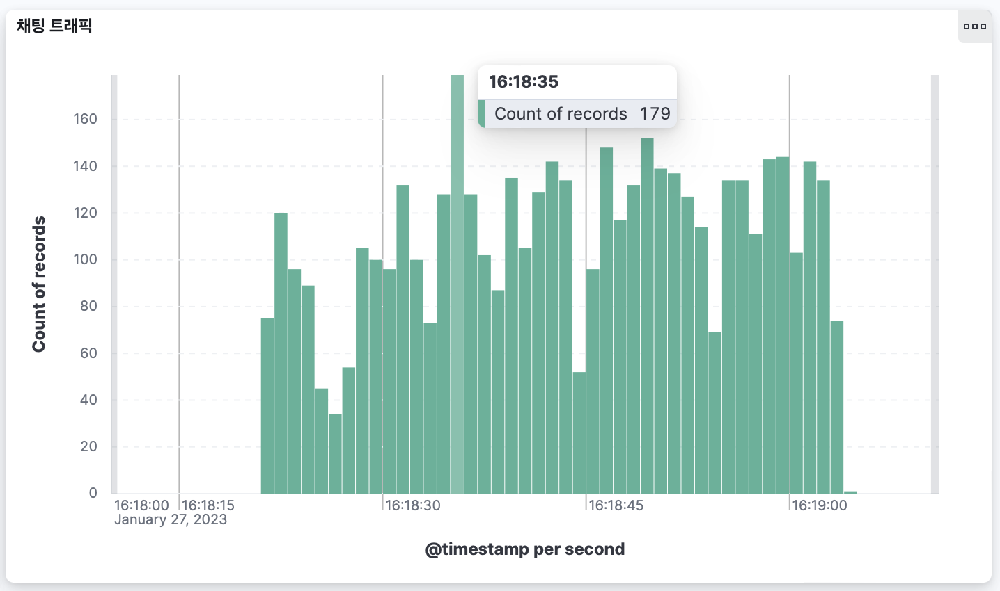
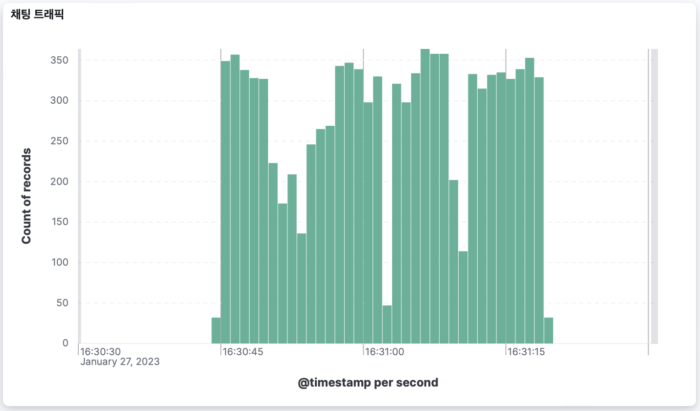

성능개선사안들 및 적용된 값들
- batch <– 성능을 가장 많이 개선시킨 부분(네트워크 로드 감소)
- before : 1
- after : 100
- chatting_id 내부 자동 생성(네트워크 로드 감소)
- before : from db sequence
- after : random.UUID
- db parallel processor 확장(db cpu 사용률 증가)
- before : 1개
- after : 8개
- 쿼리 빈도 축소( 최적화 + lazy fetch )
- before : 6번
- after : 4번
- 서버 수평 확장
- before : 1
- after : 2
테스트 환경
| 사양 | |
|---|---|
| MODEL | MacBook Pro (13-inch, 2020, Four Thunderbolt 3 ports) |
| CPU | 2 GHz 쿼드 코어 Intel Core i5 |
| MEM | 32GB 3733 MHz LPDDR4X |
| Disk | Macintosh HD |
| Docker Cpu | 8 |
| Docker Disk Storage | 150 GB |
| Docker Memory | 16 GB |
결과
10K request 80초 -> 29초로 개선되었다.
Before
1
2
3
4
5
6
test-multiple-http-request | Request url: http://127.0.0.1:8060/chat/chat
test-multiple-http-request | The number of HTTP Requests: 10000
test-multiple-http-request | The number of threads: 100
test-multiple-http-request | Proceeding! Please wait until getting all the responses
test-multiple-http-request | Elapsed Time: 80.02316758
test-multiple-http-request | Response status code: 200 , How many?: 10000

After
1
2
3
...
test-multiple-http-request | Proceeding! Please wait until getting all the responses
test-multiple-http-request | Elapsed Time: 29.554215625
